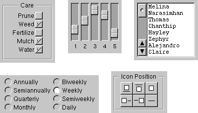
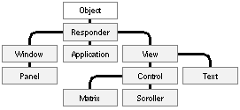
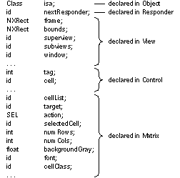
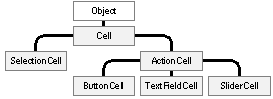
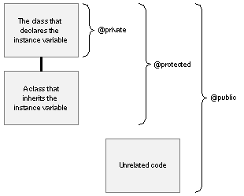
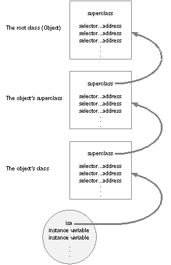
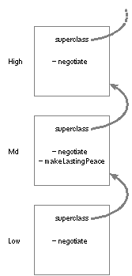

Release 3.3 Copyright ©1995 by NeXT Computer, Inc. All Rights Reserved.
| 2 |
The Objective C Language
| This chapter describes the Objective C language as it's implemented for the NEXTSTEP development environment and discusses the principles of object-oriented programming as they're implemented in Objective C. It covers all the basic features that the language adds to standard C. The next chapter continues the discussion by taking up more advanced and less commonly used language features.
Objective C syntax is a superset of standard C syntax, and its compiler works for both C and Objective C source code. The compiler recognizes Objective C source files by a ".m" extension, just as it recognizes files containing only standard C syntax by a ".c" extension. As implemented for NEXTSTEP, the Objective C language is fully compatible with ANSI standard C. Objective C can also be used as an extension to C++. At first glance, this may seem superfluous since C++ is itself an object-oriented extension of C. But C++ was designed primarily as "a better C," and not necessarily as a full-featured object-oriented language. It lacks some of the possibilities for object-oriented design that dynamic typing and dynamic binding bring to Objective C. At the same time, it has useful language features not found in Objective C. When you use the two languages in combination, you can assign appropriate roles to the features found in each and take advantage of what's best in both. Chapter 5, "Programming in Objective C," has more on combining C++ with Objective C. Because object-oriented programs postpone many decisions from compile time to run time, object-oriented languages depend on a run-time system for executing the compiled code. The run-time system for the Objective C language is discussed in Chapter 4. This chapter and the next present the language, but touch on important elements of the run-time system as they're important for understanding language features. NeXT has modified the GNU C compiler to also compile Objective C and provides its own run-time system. |
| Objects |
| As the name implies, object-oriented programs are built around objects. An object associates data with the particular operations that can use or affect that data. In Objective C, these operations are known as the object's methods; the data they affect are its instance variables. In essence, an object bundles a data structure (instance variables) and a group of procedures (methods) into a self-contained programming unit.
For example, through the NEXTSTEP Application Kit, you can produce an object that displays a matrix of cells to users of your application. The cells might be text fields where the user can enter data, a series of mutually exclusive switches, a list of buttons or menu commands, or a bank of sliders. The figure below illustrates some of the different kinds of cells a matrix can contain: |
|  |
| Figure 6. Some Matrices
A Matrix object has instance variables that define the matrix, including its dimensions and coordinates, the font used to display character strings in the cells, the arrangement of cells into rows and columns, and what to do when a cell is selected. A Matrix also has methods that do such things as alter its size, change its position on-screen, add and remove cells, highlight a particular cell, and set the color that's displayed between cells. Each cell in a Matrix is also an object. Cells have instance variables that record their contents and what action to take when the cell is selected. They have methods to determine what the cell looks like and to track the cursor as it moves from cell to cell. In Objective C, an object's instance variables are internal to the object; you get access to an object's state only through the object's methods. For others to find out something about an object, there has to be a method to supply the information. For example, a Matrix has methods that reveal its size, the currently selected cell, and the current number of columns and rows. Moreover, an object sees only the methods that were designed for it; it can't mistakenly perform methods intended for other types of objects. Just as a C function protects its local variables, hiding them from the rest of the program, an object hides both its instance variables and its method implementations.
id In Objective C, objects are identified by a distinct data type, id. This type is defined as a pointer to an object--in reality, a pointer to the object's data (its instance variables). Like a C function or an array, an object is identified by its address. All objects, regardless of their instance variables or methods, are of type id. |
 id anObject;
id anObject;
| For the object-oriented constructs of Objective C, such as method return values, id replaces int as the default data type. (For strictly C constructs, such as function return values, int remains the default type.)
The keyword nil is defined as a null object, an id with a value of 0. id, nil, and the other basic types of Objective C are defined in the header file objc.h, which is located in the objc subdirectory of /NextDeveloper/Headers.
Dynamic Typing The id type is completely nonrestrictive. By itself, it yields no information about an object, except that it is an object. But objects aren't all the same. A Matrix won't have the same methods or instance variables as an object that represents one of its cells. Cells that display buttons (ButtonCells) won't be exactly like those that display text (TextFieldCells). At some point, a program needs to find more specific information about the objects it contains--what the object's instance variables are, what methods it can perform, and so on. Since the id type designator can't supply this information to the compiler, each object has to be able to supply it at run time. This is possible because every object carries with it an isa instance variable that identifies the object's class--what kind of object it is. Every Matrix object would be able to tell the run-time system that it is a Matrix. Every ButtonCell can say that it is a ButtonCell. Objects with the same behavior (methods) and the same kinds of data (instance variables) are members of the same class. Objects are thus dynamically typed at run time. Whenever it needs to, the run-time system can find the exact class that an object belongs to, just by asking the object. Dynamic typing in Objective C serves as the foundation for dynamic binding, discussed later. The isa pointer also enables objects to introspect about themselves as objects. The compiler doesn't discard much of the information it finds in source code; it arranges most of it in data structures for the run-time system to use. Through isa, objects can find this information and reveal it at run time. An object can, for example, say whether it has a particular method in its repertoire and what the name of its superclass is. Object classes are discussed in more detail under "Classes" below. Note: It's also possible to give the compiler information about the class of an object by statically typing it in source code using the class name. Classes are particular kinds of objects, and the class name can serve as a type name. See "Class Types" later in this chapter and "Static Options" in Chapter 3. |
| Messages |
| To get an object to do something, you send it a message telling it to apply a method. In Objective C, message expressions are enclosed in square brackets: |
| [receiver message] |
| The receiver is an object, and the message tells it what to do. In source code, the message is simply the name of a method and any arguments that are passed to it. When a message is sent, the run-time system selects the appropriate method from the receiver's repertoire and invokes it.
For example, this message tells the myMatrix object to perform its display method, which draws the matrix and its cells in a window: |
 [myMatrix display];
[myMatrix display];
| Methods can also take arguments. The message below tells myMatrix to change its location within the window to coordinates (30.0, 50.0): |
 [myMatrix moveTo:30.0 :50.0];
[myMatrix moveTo:30.0 :50.0];
| Here the method name, moveTo::, has two colons, one for each of its arguments. The arguments are inserted after the colons, breaking the name apart. Colons don't have to be grouped at the end of a method name, as they are here. Usually a keyword describing the argument precedes each colon. The getRow:andColumn:ofCell: method, for example, takes three arguments: |
 int row, column;
int row, column;
 [myMatrix getRow:&row andColumn:&column ofCell:someCell];
[myMatrix getRow:&row andColumn:&column ofCell:someCell];
| This method finds someCell in the matrix and puts the row and column where it's located in the two variables provided.
Methods that take a variable number of arguments are also possible, though they're somewhat rare. Extra arguments are separated by commas after the end of the method name. (Unlike colons, the commas aren't considered part of the name.) In the following example, the imaginary makeGroup: method is passed one required argument (group) and three that are optional: |
 [receiver makeGroup:group, memberOne, memberTwo, memberThree];
[receiver makeGroup:group, memberOne, memberTwo, memberThree];
| Like standard C functions, methods can return values. The following example assigns the identifying integer returned by the tag method to a variable also named tag. |
 int tag;
int tag;
 tag = [myMatrix tag];
tag = [myMatrix tag];
| Note that a variable and a method can have the same name.
One message can be nested inside another. Here the selectedCell method returns an object that then receives a tag message: |
 int tag = [[myMatrix selectedCell] tag];
int tag = [[myMatrix selectedCell] tag];
| A message to nil also is valid, |
 [nil moveTo:100.0 :22.5];
[nil moveTo:100.0 :22.5];
| but it has no effect and makes little sense. Messages to nil simply return nil.
The Receiver's Instance Variables A method has automatic access to the receiving object's instance variables. You don't need to pass them to the method as arguments. For example, the tag method illustrated above takes no arguments, yet it can find the tag for myMatrix and return it. Every method assumes the receiver and its instance variables, without having to declare them as arguments. This convention simplifies Objective C source code. It also supports the way object-oriented programmers think about objects and messages. Messages are sent to receivers much as letters are delivered to your home. Message arguments bring information from the outside to the receiver; they don't need to bring the receiver to itself. A method has automatic access only to the receiver's instance variables. If it requires information about a variable stored in another object, it must send a message to the object asking it to reveal the contents of the variable. The selectedCell and tag methods shown above are used for just this purpose. See "Defining a Class" for more information on referring to instance variables.
Polymorphism As the examples above illustrate, messages in Objective C appear in the same syntactic positions as function calls in standard C. But, because methods "belong to" an object, messages behave differently than function calls. In particular, an object has access only to the methods that were defined for it. It can't confuse them with methods defined for other kinds of objects, even if another object has a method with the same name. This means that two objects can respond differently to the same message. For example, each kind of object sent a display message could display itself in a unique way. A ButtonCell and a TextFieldCell would respond differently to identical instructions to track the cursor. This feature, referred to as polymorphism, plays a significant role in the design of object-oriented programs. Together with dynamic binding, it permits you to write code that might apply to any number of different kinds of objects, without your having to choose at the time you write the code what kinds of objects they might be. They might even be objects that will be developed later, by other programmers working on other projects. If you write code that sends a display message to an id variable, any object that has a display method is a potential receiver.
Dynamic Binding A crucial difference between function calls and messages is that a function and its arguments are joined together in the compiled code, but a message and a receiving object aren't united until the program is running and the message is sent. Therefore, the exact method that will be invoked to respond to a message can only be determined at run time, not when the code is compiled. The precise method that a message invokes depends on the receiver. Different receivers may have different method implementations for the same method name (polymorphism). For the compiler to find the right method implementation for a message, it would have to know what kind of object the receiver is--what class it belongs to. This is information the receiver is able to reveal at run time when it receives a message (dynamic typing), but it's not available from the type declarations found in source code. The selection of a method implementation happens at run time. When a message is sent, a run-time messaging routine looks at the receiver and at the method named in the message. It locates the receiver's implementation of a method matching the name, "calls" the method, and passes it a pointer to the receiver's instance variables. (For more on this routine, see "How Messaging Works" below.) The method name in a message thus serves to "select" a method implementation. For this reason, method names in messages are often referred to as selectors. This dynamic binding of methods to messages works hand-in-hand with polymorphism to give object-oriented programming much of its flexibility and power. Since each object can have its own version of a method, a program can achieve a variety of results, not by varying the message itself, but by varying just the object that receives the message. This can be done as the program runs; receivers can be decided "on the fly" and can be made dependent on external factors such as user actions. In the Application Kit, for example, users determine which objects receive messages from menu commands like Cut, Copy, and Paste. The message goes to whatever object controls the current selection. An object that displays editable text would react to a copy: message differently than an object that displays scanned images. A Matrix would respond differently than a Cell. Since messages don't select methods (methods aren't bound to messages) until run time, these differences are isolated in the methods that respond to the message. The code that sends the message doesn't have to be concerned with them; it doesn't even have to enumerate the possibilities. Each application can invent its own objects that respond in their own way to copy: messages. Objective C takes dynamic binding one step further and allows even the message that's sent (the method selector) to be a variable that's determined at run time. This is discussed in the section on "How Messaging Works." |
| Classes |
| An object-oriented program is typically built from a variety of objects. A program based on the NEXTSTEP software kits might use Matrix objects, Window objects, List objects, SoundView objects, Text objects, and many others. Programs often use more than one object of the same kind or class--several Lists or Windows, for example.
In Objective C, you define objects by defining their class. The class definition is a prototype for a kind of object; it declares the instance variables that become part of every member of the class, and it defines a set of methods that all objects in the class can use. The compiler creates just one accessible object for each class, a class object that knows how to build new objects belonging to the class. (For this reason it's sometimes also called a "factory object.") The class object is the compiled version of the class; the objects it builds are instances of the class. The objects that will do the main work of your program are instances created by the class object at run time. All instances of a class have access to the same set of methods, and they all have a set of instance variables cut from the same mold. Each object gets its own instance variables, but the methods are shared. By convention, class names begin with an uppercase letter (such as "Matrix"); the names of instances typically begin with a lowercase letter (such as "myMatrix").
Inheritance Class definitions are additive; each new class that you define is based on another class through which it inherits methods and instance variables. The new class simply adds to or modifies what it inherits. It doesn't need to duplicate inherited code. Inheritance links all classes together in a hierarchical tree with a single class, the Object class, at its root. Every class (but Object) has a superclass one step nearer the root, and any class (including Object) can be the superclass for any number of subclasses one step farther from the root. Figure 7 below illustrates the hierarchy for a few of the classes in the NEXTSTEP Application Kit. |
|  |
| Figure 7. Some Application Kit Classes
This figure shows that the Matrix class is a subclass of the Control class, the Control class is a subclass of View, View is a subclass of Responder, and Responder is a subclass of Object. Inheritance is cumulative. So a Matrix object has the methods and instance variables defined for Control, View, Responder, and Object, as well as those defined specifically for Matrix. This is simply to say that a Matrix object isn't only a Matrix, it's also a Control, a View, a Responder, and an Object. Every class (but Object) can thus be seen as a specialization or an adaptation of another class. Each successive subclass further modifies the cumulative total of what's inherited. The Matrix class defines only the minimum needed to turn a Control into a Matrix. When you define a class, you link it to the hierarchy by declaring its superclass; every class you create must be the subclass of another class (unless you define a new root class). Plenty of potential superclasses are available. The NEXTSTEP development environment includes the Object class and several software kits containing definitions for more than 125 different classes. Some are classes that you can use "off the shelf"--incorporate into your program as is. Others you might want to adapt to your own needs by defining a subclass. Some kit classes define almost everything you need, but leave some specifics to be implemented in a subclass. You can thus create very sophisticated objects by writing only a small amount of code, and reusing work done by the programmers at NeXT.
The Object Class Object is the only class without a superclass, and the only one that's in the inheritance path for every other class. That's because it defines the basic framework for Objective C objects and object interactions. It imparts to the classes and instances that inherit from it the ability to behave as objects and cooperate with the run-time system. A class that doesn't need to inherit any special behavior from another class is nevertheless made a subclass of the Object class. Instances of the class must at least have the ability to behave like Objective C objects at run time. Inheriting this ability from the Object class is much simpler and much more reliable than reinventing it in a new class definition. Appendix C, "The Object Class," has a full specification of the root class and describes its methods in detail. Note: Implementing a new root class is a delicate task and one with many hidden hazards. The class must duplicate much of what the Object class does, such as allocate instances, connect them to their class, and identify them to the run-time system. It's strongly recommended that you use the Object class provided with NEXTSTEP as the root class. This manual doesn't explain all the ins and outs that you would need to know to replace it.
Inheriting Instance Variables When a class object creates a new instance, the new object contains not only the instance variables that were defined for its class, but also the instance variables defined for its superclass, and for its superclass's superclass, all the way back to the root Object class. The isa instance variable defined in the Object class becomes part of every object. isa connects each object to its class. Figure 8 below shows some of a Matrix object's instance variables and where they come from. Note that the variables that make the object a Matrix are added to the ones that make it a Control, and the ones that make it a Control are added to the ones that make it a View, and so on. |
|  |
| Figure 8. Matrix Instance Variables
A class doesn't have to declare instance variables. It can simply define new methods and rely on the instance variables it inherits, if it needs any instance variables at all.
Inheriting Methods An object has access not only to the methods that were defined for its class, but also to methods defined for its superclass, and for its superclass's superclass, all the way back to the root of the hierarchy. A Matrix object can use methods defined in the Control, View, Responder, and Object classes as well as methods defined in its own class. Any new class you define in your program can therefore make use of the code written for all the classes above it in the hierarchy. This type of inheritance is a major benefit of object-oriented programming. When you use one of the object-oriented kits provided by NEXTSTEP, your programs can take advantage of all the basic functionality coded into the kit classes. You have to add only the code that customizes the kit to your application. Class objects also inherit from the classes above them in the hierarchy. But because they don't have instance variables (only instances do), they inherit only methods.
Overriding One Method with Another There's one useful exception to inheritance: When you define a new class, you can implement a new method with the same name as one defined in a class farther up the hierarchy. The new method overrides the original; instances of the new class will perform it rather than the original, and subclasses of the new class will inherit it rather than the original. For example, the View class defines a display method that Matrix overrides by defining its own version of display. The View method is available to all kinds of objects that inherit from the View class--but not to Matrix objects, which instead perform the Matrix version of display. Although overriding a method blocks the original version from being inherited, other methods defined in the new class can skip over the redefined method and find the original (see "Messages to self and super," below, to learn how). A redefined method can also incorporate the very method it overrides. When it does, the new method serves only to refine or modify the method it overrides, rather than replace it outright. When several classes in the hierarchy define the same method, but each new version incorporates the version it overrides, the implementation of the method is effectively spread over all the classes. Although a subclass can override inherited methods, it can't override inherited instance variables. Since an object has memory allocated for every instance variable it inherits, you can't override an inherited variable by declaring a new one with the same name. If you try, the compiler will complain.
Abstract Classes Some classes are designed only so that other classes can inherit from them. These abstract classes group methods and instance variables that will be used by a number of different subclasses into a common definition. The abstract class is incomplete by itself, but contains useful code that reduces the implementation burden of its subclasses. The Object class is the prime example of an abstract class. Although programs often define Object subclasses and use instances belonging to the subclasses, they never use instances belonging directly to the Object class. An Object instance wouldn't be good for anything; it would be a generic object with the ability to do nothing in particular. In the NEXTSTEP software kits, abstract classes often contain code that helps define the structure of an application. When you create subclasses of these classes, instances of your new classes fit effortlessly into the application structure and work automatically with other kit objects. (Because abstract classes must have subclasses, they're sometimes also called abstract superclasses.)
Class Types A class definition is a specification for a kind of object. The class, in effect, defines a data type. The type is based not just on the data structure the class defines (instance variables), but also on the behavior included in the definition (methods). A class name can appear in source code wherever a type specifier is permitted in C--for example, as an argument to the sizeof operator: |
 int i = sizeof(Matrix);
int i = sizeof(Matrix);
| Static Typing
You can use a class name in place of id to designate an object's type: |
 Matrix *myMatrix;
Matrix *myMatrix;
| Since this way of declaring an object type gives the compiler information about what kind of object it is, it's known as static typing. Just as id is defined as a pointer to an object, objects are statically typed as pointers to a class. Objects are always typed by a pointer. Static typing makes the pointer explicit; id hides it.
Static typing permits the compiler to do some type checking--for example, to warn if an object receives a message that it appears not to be able to respond to--and to loosen some restrictions that apply to objects generically typed id. In addition, it can make your intentions clearer to others who read your source code. However, it doesn't defeat dynamic binding or alter the dynamic determination of a receiver's class at run time. An object can be statically typed to its own class or to any class that it inherits from. For example, since inheritance makes a Matrix a kind of View, a Matrix instance could be statically typed to the View class: |
 View *myMatrix;
View *myMatrix;
| This is possible because a Matrix is a View. It's more than a View since it also has the instance variables and method capabilities of a Control and a Matrix, but it's a View nonetheless. For purposes of type checking, the compiler will consider myMatrix to be a View, but at run time it will be treated as a Matrix.
See "Static Options" in the next chapter for more on static typing and its benefits.
Type Introspection Instances can reveal their types at run time. The isMemberOf: method, defined in the Object class, checks whether the receiver is an instance of a particular class: |
 if ( [anObject isMemberOf:someClass] )
if ( [anObject isMemberOf:someClass] )
 . . .
. . .
| The isKindOf: method, also defined in the Object class, checks more generally whether the receiver inherits from or is a member of a particular class (whether it has the class in its inheritance path): |
 if ( [anObject isKindOf:someClass] )
if ( [anObject isKindOf:someClass] )
 . . .
. . .
| The set of classes for which isKindOf: returns YES is the same set to which the receiver can be statically typed.
Introspection isn't limited to type information. Later sections of this chapter discuss methods that return the class object, report whether an object can respond to a message, and reveal other information. See Appendix C, "The Object Class," for more on isKindOf:, isMemberOf:, and kindred methods.
Class Objects A class definition contains various kinds of information, much of it about instances of the class: |
| The name of the class and its superclass | ||
| A template describing a set of instance variables | ||
| The declaration of method names and their return and argument types | ||
| The method implementations |
| This information is compiled and recorded in data structures made available to the run-time system. The compiler creates just one object, a class object, to represent the class. The class object has access to all the information about the class, which means mainly information about what instances of the class are like. It's able to produce new instances according to the plan put forward in the class definition.
Although a class object keeps the prototype of a class instance, it's not an instance itself. It has no instance variables of its own and it can't perform methods intended for instances of the class. However, a class definition can include methods intended specifically for the class object--class methods as opposed to instance methods. A class object inherits class methods from the classes above it in the hierarchy, just as instances inherit instance methods. In source code, the class object is represented by the class name. In the following example, the Matrix class returns the class version number using a method inherited from the Object class: |
 int versionNumber = [Matrix version];
int versionNumber = [Matrix version];
| However, the class name stands for the class object only as the receiver in a message expression. Elsewhere, you need to ask an instance or the class to return the class id. Both respond to a class message: |
 id aClass = [anObject class];
id aClass = [anObject class];
 id matrixClass = [Matrix class];
id matrixClass = [Matrix class];
| As these examples show, class objects can, like all other objects, be typed id. But class objects can also be more specifically typed to the Class data type: |
 Class aClass = [anObject class];
Class aClass = [anObject class];
 Class matrixClass = [Matrix class];
Class matrixClass = [Matrix class];
| All class objects are of type Class. Using this type name for a class is equivalent to using the class name to statically type an instance.
Class objects are thus full-fledged objects that can be dynamically typed, receive messages, and inherit methods from other classes. They're special only in that they're created by the compiler, lack data structures (instance variables) of their own other than those built from the class definition, and are the agents for producing instances at run time. Note: The compiler also builds a "metaclass object" for each class. It describes the class object just as the class object describes instances of the class. But while you can send messages to instances and to the class object, the metaclass object is used only internally by the run-time system.
Creating Instances A principal function of a class object is to create new instances. This code tells the Matrix class to create a new Matrix instance and assign it to the myMatrix variable: |
 id myMatrix;
id myMatrix;
 myMatrix = [Matrix alloc];
myMatrix = [Matrix alloc];
| The alloc method dynamically allocates memory for the new object's instance variables and initializes them all to 0--all, that is, except the isa variable that connects the new instance to its class. For an object to be useful, it generally needs to be more completely initialized. That's the function of an init method. Initialization typically follows immediately after allocation: |
 myMatrix = [[Matrix alloc] init];
myMatrix = [[Matrix alloc] init];
| This line of code, or one like it, would be necessary before myMatrix could receive any of the messages that were illustrated in previous examples in this chapter. The alloc method returns a new instance and that instance performs an init method to set its initial state. Every class object has at least one method (like alloc) that enables it to produce new objects, and every instance has at least one method (like init) that prepares it for use. Initialization methods often take arguments to allow particular values to be passed and have keywords to label the arguments (initFrame:mode:cellClass:numRows:numColumns:, for example, is the method that would most often initialize a new Matrix instance), but they all begin with "init".
Customization with Class Objects It's not just a whim of the Objective C language that classes are treated as objects. It's a choice that has intended, and sometimes surprising, benefits for design. It's possible, for example, to customize an object with a class, where the class belongs to an open-ended set. In the Application Kit, a Matrix object can be customized with a particular kind of Cell. A Matrix can take responsibility for creating the individual objects that represent its cells. It can do this when the Matrix is first initialized and later when new cells are needed. The visible matrix that a Matrix object draws on-screen can grow and shrink at run time, perhaps in response to user actions. When it grows, the Matrix needs to be able to produce new objects to fill the new slots that are added. But what kind of objects should they be? Each Matrix displays just one kind of Cell, but there are many different kinds. The inheritance hierarchy in Figure 9 below shows some of those provided by the Application Kit. All inherit from the generic Cell class: |
|  |
| Figure 9. Inheritance Hierarchy for Cells
When a Matrix creates new Cell objects, should they be ButtonCells to display a bank of buttons or switches, TextFieldCells to display a field where the user can enter and edit text, or some other kind of Cell? The Matrix must allow for any kind of Cell, even types that haven't been invented yet. One solution to this problem would be to define the Matrix class as an abstract class and require everyone who uses it to declare a subclass and implement the methods that produce new cells. Because they would be implementing the methods, users of the class could be sure that the objects they created were of the right type. But this requires others to do work that ought to be done in the Matrix class, and it unnecessarily proliferates the number of classes. Since an application might need more than one kind of Matrix, each with a different kind of Cell, it could become cluttered with Matrix subclasses. Every time you invented a new kind of Cell, you'd also have to define a new kind of Matrix. Moreover, programmers on different projects would be writing virtually identical code to do the same job, all to make up for Matrix's failure to do it. A better solution, the solution the Matrix class actually adopts, is to allow Matrix instances to be initialized with a kind of Cell--with a class object. It defines a setCellClass: method that passes the class object for the kind of Cell object a Matrix should use to fill empty slots: |
 [myMatrix setCellClass:[ButtonCell class]];
[myMatrix setCellClass:[ButtonCell class]];
| The Matrix uses the class object to produce new cells when it's first initialized and whenever it's resized to contain more cells. This kind of customization would be impossible if classes weren't objects that could be passed in messages and assigned to variables.
Variables and Class Objects When you define a new class of objects, you can decide what instance variables they should have. Every instance of the class will have its own copy of all the variables you declare; each object controls its own data. However, you can't prescribe variables for the class object; there are no "class variable" counterparts to instance variables. Only internal data structures, initialized from the class definition, are provided for the class. The class object also has no access to the instance variables of any instances; it can't initialize, read, or alter them. Therefore, for all the instances of a class to share data, an external variable of some sort is required. Some classes declare static variables and provide class methods to manage them. (Declaring a variable static in the same file as the class definition limits its scope to just the class--and to just the part of the class that's implemented in the file. Unlike instance variables, static variables can't be inherited by subclasses, unless the subclasses are defined in the same file.) Static variables help give the class object more functionality than just that of a "factory" producing instances; it can approach being a complete and versatile object in its own right. A class object can be used to coordinate the instances it creates, dispense instances from lists of objects already created, or manage other processes essential to the application. In the limiting case, when you need only one object of a particular class, you can put all the object's state into static variables and use only class methods. This saves the step of allocating and initializing an instance. Note: It would also be possible to use external variables that weren't declared static, but the limited scope of static variables better serves the purpose of encapsulating data into separate objects.
Initializing a Class Object If a class object is to be used for anything besides allocating instances, it may need to be initialized just as an instance is. Although programs don't allocate class objects, Objective C does provide a way for programs to initialize them. The run-time system sends an initialize message to every class object before the class receives any other messages. This gives the class a chance to set up its run-time environment before it's used. If no initialization is required, you don't need to write an initialize method to respond to the message; the Object class defines an empty version that your class can inherit and perform. If a class makes use of static or global variables, the initialize method is a good place to set their initial values. For example, if a class maintains an array of instances, the initialize method could set up the array and even allocate one or two default instances to have them ready.
Methods of the Root Class All objects, classes and instances alike, need an interface to the run-time system. Both class objects and instances should be able to introspect about their abilities and to report their place in the inheritance hierarchy. It's the province of the Object class to provide this interface. So that Object's methods won't all have to be implemented twice--once to provide a run-time interface for instances and again to duplicate that interface for class objects--class objects are given special dispensation to perform instance methods defined in the root class. When a class object receives a message that it can't respond to with a class method, the run-time system will see if there's a root instance method that can respond. The only instance methods that a class object can perform are those defined in the root class, and only if there's no class method that can do the job. For more on this peculiar ability of class objects to perform root instance methods, see the "Class Description" section in Appendix C, "The Object Class."
Class Names in Source Code In source code, class names can be used in only two very different contexts. These contexts reflect the dual role of a class as a data type and as an object: |
| The class name can be used as a type name for a kind of object. For example: |
 Matrix *anObject;
Matrix *anObject;
 anObject = [[Matrix alloc] init];
anObject = [[Matrix alloc] init];
| Here anObject is statically typed to be a Matrix. The compiler will expect it to have the data structure of a Matrix instance and the instance methods defined and inherited by the Matrix class. Static typing enables the compiler to do better type checking and makes source code more self-documenting. See "Static Options" in the next chapter for details.
Only instances can be statically typed; class objects can't be, since they aren't members of a class, but rather belong to the Class data type. |
| As the receiver in a message expression, the class name refers to the class object. This usage was illustrated in several of the examples above. The class name can stand for the class object only as a message receiver. In any other context, you must ask the class object to reveal its id (by sending it a class message). The example below passes the Matrix class as an argument in an isKindOf: message. |
 if ( [anObject isKindOf:[Matrix class]] )
if ( [anObject isKindOf:[Matrix class]] )
 . . .
. . .
| It would have been illegal to simply use the name "Matrix" as the argument. The class name can only be a receiver.
If you don't know the class name at compile time but have it as a string at run time, objc_lookUpClass() will return the class object: |
 if ( [anObject isKindOf:objc_lookUpClass(aBuffer)] )
if ( [anObject isKindOf:objc_lookUpClass(aBuffer)] )
 . . .
. . .
| This function returns nil if the string it's passed is not a valid class name. |
| Class names compete in the same name space as variables and functions. A class and a global variable can't have the same name. Class names are about the only names with global visibility in Objective C. |
| Defining a Class |
| Much of object-oriented programming consists of writing the code for new objects--defining new classes. In Objective C, classes are defined in two parts: |
| An interface that declares the methods and instance variables of the class and names its superclass | ||
| An implementation that actually defines the class (contains the code that implements its methods) |
| Although the compiler doesn't require it, the interface and implementation are usually separated into two different files. The interface file must be made available to anyone who uses the class. You generally wouldn't want to distribute the implementation file that widely; users don't need source code for the implementation.
A single file can declare or implement more than one class. Nevertheless, it's customary to have a separate interface file for each class, if not also a separate implementation file. Keeping class interfaces separate better reflects their status as independent entities. Interface and implementation files typically are named after the class. The implementation file has a ".m" suffix, indicating that it contains Objective C source code. The interface file can be assigned any other extension. Because it's included in other source files, the interface file usually has the ".h" suffix typical of header files. For example, the Matrix class would be declared in Matrix.h and defined in Matrix.m. Separating an object's interface from its implementation fits well with the design of object-oriented programs. An object is a self-contained entity that can be viewed from the outside almost as a "black box." Once you've determined how an object will interact with other elements in your program--that is, once you've declared its interface--you can freely alter its implementation without affecting any other part of the application.
The Interface The declaration of a class interface begins with the compiler directive @interface and ends with the directive @end. (All Objective C directives to the compiler begin with "@".) |
| @interface ClassName : ItsSuperclass { } method declarations @end |
| The first line of the declaration presents the new class name and links it to its superclass. The superclass defines the position of the new class in the inheritance hierarchy, as discussed under "Inheritance" above. If the colon and superclass name are omitted, the new class is declared as a root class, a rival to the Object class.
Following the class declaration, braces enclose declarations of instance variables, the data structures that will be part of each instance of the class. Here's a partial list of the instance variables declared in the Matrix class: |
 id selectedCell;
id selectedCell;
 int numRows;
int numRows;
 int numCols;
int numCols;
 float backgroundGray;
float backgroundGray;
 id cellClass;
id cellClass;
| Methods for the class are declared next, after the braces enclosing instance variables and before the end of the class declaration. The names of methods that can be used by class objects, class methods, are preceded by a plus sign: |
 + alloc;
+ alloc;
| The methods that instances of a class can use, instance methods, are marked with a minus sign: |
 - display;
- display;
| Although it's not a common practice, you can define a class method and an instance method with the same name. A method can also have the same name as an instance variable. This is more common, especially if the method returns the value in the variable. For example, Matrix has a selectedCell method to match its selectedCell instance variable.
Method return types are declared using the standard C syntax for casting one type to another: |
 - (int)tag;
- (int)tag;
| Argument types are declared in the same way: |
 - setTag:(int)anInt;
- setTag:(int)anInt;
| If a return or argument type isn't explicitly declared, it's assumed to be the default type for methods and messages--an id. The alloc, display, and setTag: methods illustrated above all return ids.
When there's more than one argument, they're declared within the method name after the colons. Arguments break the name apart in the declaration, just as in a message. For example: |
 - moveTo:(NXCoord)x :(NXCoord)y;
- moveTo:(NXCoord)x :(NXCoord)y;
 - getRow:(int *)aRow andColumn:(int *)aColumn ofCell:aCell;
- getRow:(int *)aRow andColumn:(int *)aColumn ofCell:aCell;
| (NXCoord is a defined type for floating-point values that specify coordinate measurements.)
Methods that take a variable number of arguments declare them using a comma and an ellipsis, just as a function would: |
 - makeGroup:group, ...;
- makeGroup:group, ...;
| Importing the Interface
The interface file must be included in any source module that depends on the class interface--that includes any module that creates an instance of the class, sends a message to invoke a method declared for the class, or mentions an instance variable declared in the class. The interface is usually included with the #import directive: |
 #import "Matrix.h"
#import "Matrix.h"
| This directive is identical to #include, except that it makes sure that the same file is never included more than once. It's therefore preferred, and is used in place of #include in code examples throughout NEXTSTEP documentation.
To reflect the fact that a class definition builds on the definitions of inherited classes, an interface file begins by importing the interface for its superclass: |
| #import "ItsSuperclass.h"
@interface ClassName : ItsSuperclass |
| This convention means that every interface file includes, indirectly, the interface files for all inherited classes. When a source module imports a class interface, it gets interfaces for the entire inheritance hierarchy that the class is built upon.
Referring to Other Classes An interface file declares a class and, by importing its superclass, implicitly contains declarations for all inherited classes, from Object on down through its superclass. If the interface mentions classes not in this hierarchy, it must import them explicitly--or, better, declare them with the @class directive: |
 @class Matrix, List;
@class Matrix, List;
| This directive simply informs the compiler that "Matrix" and "List" are class names. It doesn't import their interface files.
An interface file mentions class names when it statically types instance variables, return values, and arguments. For example, this declaration |
 - getCells:(List *)theCells;
- getCells:(List *)theCells;
| mentions the List class.
Since declarations like this simply use the class name as a type and don't depend on any details of the class interface (its methods and instance variables), the @class directive gives the compiler sufficient forewarning of what to expect. However, where the interface to a class is actually used (instances created, messages sent), the class interface must be imported. Typically, an interface file uses @class to declare classes, and the corresponding implementation file imports their interfaces (since it will need to create instances of those classes or send them messages). The @class directive minimizes the amount of code seen by the compiler and linker, and is therefore the simplest way to give a forward declaration of a class name. Being simple, it avoids potential problems that may come with importing files that import still other files. For example, if one class declares a statically typed instance variable of another class, and their two interface files import each other, neither class may compile correctly.
The Role of the Interface The purpose of the interface file is to declare the new class to other source modules (and to other programmers). It contains all the information they need to work with the class (programmers might also appreciate a little documentation). |
| Through its list of method declarations, the interface file lets other modules know what messages can be sent to the class object and instances of the class. Every method that can be used outside the class definition is declared in the interface file; methods that are internal to the class implementation can be omitted. | ||
| It also lets the compiler know what instance variables an object contains and programmers know what variables their subclasses will inherit. Although instance variables are most naturally viewed as a matter of the implementation of a class rather than its interface, they must nevertheless be declared in the interface file. This is because the compiler must be aware of the structure of an object where it's used, not just where it's defined. As a programmer, however, you can generally ignore the instance variables of the classes you use, except when defining a subclass. | ||
| Finally, the interface file also tells users how the class is connected into the inheritance hierarchy and what other classes--inherited or simply referred to somewhere in the class--are needed. |
| The Implementation
The definition of a class is structured very much like its declaration. It begins with an @implementation directive and ends with @end: |
| @implementation ClassName : ItsSuperclass { } method definitions @end |
| However, every implementation file must import its own interface. For example, Matrix.m imports Matrix.h. Because the implementation doesn't need to repeat any of the declarations it imports, it can safely omit: |
| The name of the superclass | ||
| The declarations of instance variables |
| This simplifies the implementation and makes it mainly devoted to method definitions: |
| #import "ClassName.h"
@implementation ClassName |
| Methods for a class are defined, like C functions, within a pair of braces. Before the braces, they're declared in the same manner as in the interface file, but without the semicolon. For example: |
 + alloc
+ alloc
 {
{
 . . .
. . .
 }
}
 - (int)tag
- (int)tag
 {
{
 . . .
. . .
 }
}
 - moveTo:(NXCoord)x :(NXCoord)y
- moveTo:(NXCoord)x :(NXCoord)y
 {
{
 . . .
. . .
 }
}
| Methods that take a variable number of arguments handle them just as a functions would: |
 #import <stdarg.h>
#import <stdarg.h>
 - getGroup:group, ...
- getGroup:group, ...
 {
{
 va_list ap;
va_list ap;
 va_start(ap, group);
va_start(ap, group);
 . . .
. . .
 }
}
| Referring to Instance Variables
By default, the definition of an instance method has all the instance variables of a potential receiving object within its scope. It can refer to them simply by name. Although the compiler creates the equivalent of C structures to store instance variables, the exact nature of the structure is hidden. You don't need either of the structure operators (`.' or `->') to refer to an object's data. For example, the following method definition refers to the receiver's tag instance variable: |
 - setTag:(int)anInt
- setTag:(int)anInt
 {
{
 tag = anInt;
tag = anInt;
 . . .
. . .
 }
}
| Neither the receiving object nor its tag instance variable is declared as an argument to this method, yet the instance variable falls within its scope. This simplification of method syntax is a significant shorthand in the writing of Objective C code.
The instance variables of the receiving object are not the only ones that you can refer to within the implementation of a class. You can refer to any instance variable of any object as long as two conditions are met: |
| The instance variable must be within the scope of the class definition. Normally that means the instance variable must be one that the class declares or inherits. (Scope is discussed in more detail in the next section.) | ||
| The compiler must know what kind of object the instance variable belongs to. |
| When the instance variable belongs to the receiver (as it does in the setTag: example above), this second condition is met automatically. The receiver's type is implicit but clear--it's the very type that the class defines.
When the instance variable belongs to an object that's not the receiver, the object's type must be made explicit to the compiler through static typing. In referring to the instance variable of a statically typed object, the structure pointer operator (`->') is used. Suppose, for example, that the Sibling class declares a statically typed object, twin, as an instance variable: |
 @interface Sibling : Object
@interface Sibling : Object
 {
{
 Sibling *twin;
Sibling *twin;
 int gender;
int gender;
 struct features *appearance;
struct features *appearance;
 }
}
| As long as the instance variables of the statically typed object are within the scope of the class (as they are here because twin is typed to the same class), a Sibling method can set them directly: |
 - makeIdenticalTwin
- makeIdenticalTwin
 {
{
 if ( !twin ) {
if ( !twin ) {
 twin = [[Sibling alloc] init];
twin = [[Sibling alloc] init];
 twin->gender = gender;
twin->gender = gender;
 twin->appearance = appearance;
twin->appearance = appearance;
 }
}
 return twin;
return twin;
 }
}
| The Scope of Instance Variables
Although they're declared in the class interface, instance variables are more a matter of the way a class is implemented than of the way it's used. An object's interface lies in its methods, not in its internal data structures. Often there's a one-to-one correspondence between a method and an instance variable, as in the following example: |
 - (int)tag
- (int)tag
 {
{
 return tag;
return tag;
 }
}
| But this need not be the case. Some methods might return information not stored in instance variables, and some instance variables might store information that an object is unwilling to reveal.
As a class is revised from time to time, the choice of instance variables may change, even though the methods it declares remain the same. As long as messages are the vehicle for interacting with instances of the class, these changes won't really affect its interface. To enforce the ability of an object to hide its data, the compiler limits the scope of instance variables--that is, limits their visibility within the program. But to provide flexibility, it also lets you explicitly set the scope at three different levels. Each level is marked by a compiler directive: |
| Directive | Meaning | |
| @private | The instance variable is accessible only within the class that declares it. | |
| @protected | The instance variable is accessible within the class that declares it and within classes that inherit it. | |
| @public | The instance variable is accessible everywhere. |
| This is illustrated in Figure 10. |
|  |
| Figure 10. The Scope of Instance Variables
A directive applies to all the instance variables listed after it, up to the next directive or the end of the list. In the following example, the age and evaluation instance variables are private, name, job, and wage are protected, and boss is public. |
 @interface Worker : Object
@interface Worker : Object
 {
{
 char *name;
char *name;
 @private
@private
 int age;
int age;
 char *evaluation;
char *evaluation;
 @protected
@protected
 id job;
id job;
 float wage;
float wage;
 @public
@public
 id boss;
id boss;
 }
}
| By default, all unmarked instance variables (like name above) are @protected.
All instance variable that a class declares, no matter how they're marked, are within the scope of the class definition. For example, a class that declares a job instance variable, such as the Worker class shown above, can refer to it in a method definition: |
 - promoteTo:newPosition
- promoteTo:newPosition
 {
{
 id old = job;
id old = job;
 job = newPosition;
job = newPosition;
 return old;
return old;
 }
}
| Obviously, if a class couldn't access its own instance variables, the instance variables would be of no use whatsoever.
Normally, a class also has access to the instance variables it inherits. The ability to refer to an instance variable is usually inherited along with the variable. It makes sense for classes to have their entire data structures within their scope, especially if you think of a class definition as merely an elaboration of the classes it inherits from. The promoteTo: method illustrated above could just as well have been defined in any class that inherits the job instance variable from the Worker class. However, there are reasons why you might want to restrict inheriting classes from accessing an instance variable: |
| Once a subclass accesses an inherited instance variable, the class that declares the variable is tied to that part of its implementation. In later versions, it can't eliminate the variable or alter the role it plays without inadvertently breaking the subclass. | ||
| Moreover, if a subclass accesses an inherited instance variable and alters its value, it may inadvertently introduce bugs in the class that declares the variable, especially if the variable is involved in class-internal dependencies. |
| To limit an instance variable's scope to just the class that declares it, you must mark it @private.
At the other extreme, marking a variable @public makes it generally available, even outside of class definitions that inherit or declare the variable. Normally, to get information stored in an instance variable, other modules must send a message requesting it. However, a public instance variable can be accessed anywhere as if it were a field in a C structure. |
 Worker *ceo = [[Worker alloc] init];
Worker *ceo = [[Worker alloc] init];
 ceo->boss = nil;
ceo->boss = nil;
| Note that the object must be statically typed.
Marking instance variables @public defeats the ability of an object to hide its data. It runs counter to a fundamental principle of object-oriented programming--the encapsulation of data within objects where it's protected from view and inadvertent error. Public instance variables should therefore be avoided except in extraordinary cases. |
| How Messaging Works |
| In Objective C, messages aren't bound to method implementations until run time. The compiler converts a message expression, |
| [receiver message] |
| into a call on a messaging function, objc_msgSend(). This function takes the receiver and the name of the method mentioned in the message--that is, the method selector--as its two principal arguments: |
| objc_msgSend(receiver, selector) |
| Any arguments passed in the message are also handed to objc_msgSend(): |
| objc_msgSend(receiver, selector, arg1, arg2, . . .) |
| The messaging function does everything necessary for dynamic binding: |
| It first finds the procedure (method implementation) that the selector refers to. Since the same method can be implemented differently by different classes, the precise procedure that it finds depends on the class of the receiver. | ||
| It then calls the procedure, passing it the receiving object (a pointer to its data), along with any arguments that were specified for the method. | ||
| Finally, it passes on the return value of the procedure as its own return value. |
| Note: The compiler generates calls to the messaging function. You should never call it directly in the code you write.
The key to messaging lies in the structures that the compiler builds for each class and object. Every class structure includes these two essential elements: |
| A pointer to the superclass. | ||
| A class dispatch table. This table has entries that associate method selectors with the class-specific addresses of the methods they identify. The selector for the moveTo:: method is associated with the address of (the procedure that implements) moveTo::, the selector for the display method is associated with display's address, and so on. |
| When a new object is created, memory for it is allocated and its instance variables are initialized. First among the object's variables is a pointer to its class structure. This pointer, called isa, gives the object access to its class and, through the class, to all the classes it inherits from.
These elements of class and object structure are illustrated in Figure 11. |
|  |
| Figure 11. Messaging Framework
When a message is sent to an object, the messaging function follows the object's isa pointer to the class structure, where it looks up the method selector in the dispatch table. If it can't find the selector there, objc_msgSend() follows the pointer to the superclass and tries to find the selector in its dispatch table. Successive failures cause objc_msgSend() to climb the class hierarchy until it reaches the Object class. Once it locates the selector, it calls the method entered in the table and passes it the receiving object's data structure. This is the way that method implementations are chosen at run time--or, in the jargon of object-oriented programming, that methods are dynamically bound to messages. To speed the messaging process, the run-time system caches the selectors and addresses of methods as they are used. There's a separate cache for each class, and it can contain selectors for inherited methods as well as for methods defined in the class. Before searching the dispatch tables, the messaging routine first checks the cache of the receiving object's class (on the theory that a method that was used once may likely be used again). If the method selector is in the cache, messaging is only slightly slower than a function call. Once a program has been running long enough to "warm up" its caches, almost all the messages it sends will find a cached method. Caches grow dynamically to accommodate new messages as the program runs.
Selectors For efficiency, full ASCII names are not used as method selectors in compiled code. Instead, the compiler writes each method name into a table, then pairs the name with a unique identifier that will represent the method at run time. The run-time system makes sure each identifier is unique: No two selectors are the same, and all methods with the same name have the same selector. Compiled selectors are assigned to a special type, SEL, to distinguish them from other data. Valid selectors are never 0. A compiled selector contains fields of coded information that aid run-time messaging. You should therefore let the system assign SEL identifiers to methods; it won't work to assign them arbitrarily yourself. The @selector() directive lets Objective C source code refer to the compiled selector, rather than to the full method name. Here the selector for moveTo:: is assigned to the mover variable: |
 SEL mover;
SEL mover;
 mover = @selector(moveTo::);
mover = @selector(moveTo::);
| It's most efficient to assign values to SEL variables at compile time with the @selector() directive. However, in some cases, a program may need to convert a character string to a selector at run time. This can be done with the sel_getUid() function: |
 mover = sel_getUid(aBuffer);
mover = sel_getUid(aBuffer);
| Conversion in the opposite direction is also possible. The sel_getName() function returns a method name for a selector: |
 char *method;
char *method;
 method = sel_getName(mover);
method = sel_getName(mover);
| These and other run-time functions are described in the NEXTSTEP General Reference manual.
Methods and Selectors Compiled selectors identify method names, not method implementations. Matrix's display method, for example, will have the same selector as display methods defined in other classes. This is essential for polymorphism and dynamic binding; it lets you send the same message to receivers belonging to different classes. If there were one selector per method implementation, a message would be no different than a function call. A class method and an instance method with the same name are assigned the same selector. However, because of their different domains, there's no confusion between the two. A class could define a display class method in addition to a display instance method.
Method Return and Argument Types The messaging routine has access to method implementations only through selectors, so it treats all methods with the same selector alike. It discovers the return type of a method, and the data types of its arguments, from the selector. Therefore, except for messages sent to statically typed receivers, dynamic binding requires all implementations of identically named methods to have the same return type and the same argument types. (Statically typed receivers are an exception to this rule, since the compiler can learn about the method implementation from the class type.) Although identically named class methods and instance methods are represented by the same selector, they can have different argument and return types.
Varying the Message at Run Time The perform:, perform:with:, and perform:with:with: methods, defined in the Object class, take SEL identifiers as their initial arguments. All three methods map directly into the messaging function. For example, |
 [friend perform:@selector(gossipAbout:) with:aNeighbor];
[friend perform:@selector(gossipAbout:) with:aNeighbor];
| is equivalent to: |
 [friend gossipAbout:aNeighbor];
[friend gossipAbout:aNeighbor];
| These methods make it possible to vary a message at run time, just as it's possible to vary the object that receives the message. Variable names can be used in both halves of a message expression: |
 id helper = getTheReceiver();
id helper = getTheReceiver();
 SEL request = getTheSelector();
SEL request = getTheSelector();
 [helper perform:request];
[helper perform:request];
| In this example, the receiver (helper) is chosen at run time (by the fictitious getTheReceiver() function), and the method the receiver is asked to perform (request) is also determined at run time (by the equally fictitious getTheSelector() function).
Note: perform: and its companion methods return an id. If the method that's performed returns a different type, it should be cast to the proper type. (However, casting won't work for all types; the method should return a pointer or a type compatible with a pointer.)
The Target-Action Paradigm In its treatment of user-interface controls, the NEXTSTEP Application Kit makes good use of the ability vary both the receiver and the message. Controls are graphical devices that can be used to give instructions to an application. Most resemble real-world control devices such as buttons, switches, knobs, text fields, dials, menu items, and the like. In software, these devices stand between the application and the user. They interpret events coming from hardware devices like the keyboard and mouse and translate them into application-specific instructions. For example, a button labeled "Find" would translate a mouse click into an instruction for the application to start searching for something. The Application Kit defines a framework for creating control devices and defines a few "off-the-shelf" devices of its own. For example, the ButtonCell class defines an object that you can assign to a Matrix and initialize with a size, a label, a picture, a font, and a keyboard alternative. When the user clicks the button (or uses the keyboard alternative), the ButtonCell sends a message instructing the application to do something. To do this, a ButtonCell must be initialized not just with an image, a size, and a label, but with directions on what message to send and who to send it to. Accordingly, a ButtonCell can be initialized for an action message, the method selector it should use in the message it sends, and a target, the object that should receive the message. |
 [myButtonCell setAction:@selector(reapTheWind:)];
[myButtonCell setAction:@selector(reapTheWind:)];
 [myButtonCell setTarget:anObject];
[myButtonCell setTarget:anObject];
| The ButtonCell sends the message using Object's perform:with: method. All action messages take a single argument, the id of the control device sending the message.
If Objective C didn't allow the message to be varied, all ButtonCells would have to send the same message; the name of the method would be frozen in the ButtonCell source code. Instead of simply implementing a mechanism for translating user actions into action messages, ButtonCells and other controls would have to constrain the content of the message. This would make it difficult for any object to respond to more than one ButtonCell. There would either have to be one target for each button, or the target object would have to discover which button the message came from and act accordingly. Each time you rearranged the user interface, you'd also have to reimplement the method that responds to the action message. This would be an unnecessary complication that Objective C happily avoids.
Avoiding Messaging Errors If an object receives a message to perform a method that isn't in its repertoire, an error results. It's the same sort of error as calling a nonexistent function. But because messaging occurs at run time, the error often won't be evident until the program executes. It's relatively easy to avoid this error when the message selector is constant and the class of the receiving object is known. As you're programming, you can check to be sure that the receiver is able to respond. If the receiver is statically typed, the compiler will check for you. However, if the message selector or the class of the receiver varies, it may be necessary to postpone this check until run time. The respondsTo: method, defined in the Object class, determines whether a potential receiver can respond to a potential message. It takes the method selector as an argument, and returns whether the receiver has access to a method matching the selector: |
 if ( [anObject respondsTo:@selector(moveTo::)] )
if ( [anObject respondsTo:@selector(moveTo::)] )
 [anObject moveTo:0.0 :0.0];
[anObject moveTo:0.0 :0.0];
 else
else
 fprintf(stderr, "%s can't be moved\n", [anObject name]);
fprintf(stderr, "%s can't be moved\n", [anObject name]);
| The respondsTo: test is especially important when sending messages to objects that you don't have control over at compile time. For example, if you write code that sends a message to an object represented by a variable that others can set, you should check to be sure the receiver implements a method that can respond to the message.
Note: An object can also arrange to have messages it receives forwarded to other objects, if it can't respond to them directly itself. In that case, it will appear that the object can't handle the message, even though it responds to it indirectly by assigning it to another object. Forwarding is discussed in Chapter 4, "The Run-Time System."
Hidden Arguments When the messaging function finds the procedure that implements a method, it calls the procedure and passes it all the arguments in the message. It also passes the procedure two hidden arguments: |
| The receiving object. | ||
| The selector for the method. |
| These arguments give every method implementation explicit information about the two halves of the message expression that invoked it. They're said to be "hidden" because they aren't declared in the source code that defines the method. They're inserted into the implementation when the code is compiled.
Although these arguments aren't explicitly declared, source code can still refer to them (just as it can refer to the receiving object's instance variables). A method refers to the receiving object as self, and to its own selector as _cmd. In the example below, _cmd refers to the selector for the strange method and self to the object that receives a strange message. |
 - strange
- strange
 {
{
 id target = getTheReceiver();
id target = getTheReceiver();
 SEL action = getTheMethod();
SEL action = getTheMethod();
 if ( target == self || action == _cmd )
if ( target == self || action == _cmd )
 return nil;
return nil;
 return [target perform:action];
return [target perform:action];
 }
}
| self is the more useful of the two arguments. It is, in fact, the way the receiving object's instance variables are made available to the method definition.
Methods that have no other meaningful return value typically return self, rather than void. This enables messages to be nested in source code. For example: |
 [[[myMatrix setMode:NX_RADIOMODE] setEnabled:YES] setTag:99];
[[[myMatrix setMode:NX_RADIOMODE] setEnabled:YES] setTag:99];
| self is discussed in more detail in the next section.
Messages to self and super Objective C provides two terms that can be used within a method definition to refer to the object that performs the method--self and super. Suppose, for example, that you define a reposition method that needs to change the coordinates of whatever object it acts on. It can invoke the moveTo:: method to make the change. All it needs to do is send a moveTo:: message to the very same object that the reposition message itself was sent to. When you're writing the reposition code, you can refer to that object as either self or super. The reposition method could read either: |
 - reposition
- reposition
 {
{
 . . .
. . .
 [self moveTo:someX :someY];
[self moveTo:someX :someY];
 . . .
. . .
 }
}
| or: |
 - reposition
- reposition
 {
{
 . . .
. . .
 [super moveTo:someX :someY];
[super moveTo:someX :someY];
 . . .
. . .
 }
}
| Here self and super both refer to the object receiving a reposition message, whatever object that may happen to be. The two terms are quite different, however. self is one of the hidden arguments that the messaging routine passes to every method; it's a local variable that can be used freely within a method implementation, just as the names of instance variables can be. super is a term that substitutes for self only as the receiver in a message expression. As receivers, the two terms differ principally in how they affect the messaging process: |
| self searches for the method implementation in the usual manner, starting in the dispatch table of the receiving object's class. In the example above, it would begin with the class of the object receiving the reposition message. | ||
| super starts the search for the method implementation in a very different place. It begins in the superclass of the class that defines the method where super appears. In the example above, it would begin with the superclass of the class where reposition is defined. |
| Wherever super receives a message, the compiler substitutes another messaging routine for objc_msgSend(). The substitute routine looks directly to the superclass of the defining class--that is, to the superclass of the class sending the message to super--rather than to the class of the object receiving the message.
An Example The difference between self and super becomes clear in a hierarchy of three classes. Suppose, for example, that we create an object belonging to a class called Low. Low's superclass is Mid; Mid's superclass is High. All three classes define a method called negotiate, which they use for a variety of purposes. In addition, Mid defines an ambitious method called makeLastingPeace, which also has need of the negotiate method. This is illustrated in Figure 12 below: |
|  |
| Figure 12. High, Mid, and Low
We now send a message to our Low object to perform the makeLastingPeace method, and makeLastingPeace, in turn, sends a negotiate message to the same Low object. If source code calls this object self, |
 - makeLastingPeace
- makeLastingPeace
 {
{
 [self negotiate];
[self negotiate];
 . . .
. . .
 }
}
| the messaging routine will find the version of negotiate defined in Low, self's class. However, if source code calls this object super, |
 - makeLastingPeace
- makeLastingPeace
 {
{
 [super negotiate];
[super negotiate];
 . . .
. . .
 }
}
| the messaging routine will find the version of negotiate defined in High. It ignores the receiving object's class (Low) and skips to the superclass of Mid, since Mid is where makeLastingPeace is defined. Neither message finds Mid's version of negotiate.
As this example illustrates, super provides a way to bypass a method that overrides another method. Here it enabled makeLastingPeace to avoid the Mid version of negotiate that redefined the original High version. Not being able to reach Mid's version of negotiate may seem like a flaw, but, under the circumstances, it's right to avoid it: |
| The author of the Low class intentionally overrode Mid's version of negotiate so that instances of the Low class (and its subclasses) would invoke the redefined version of the method instead. The designer of Low didn't want Low objects to perform the inherited method. | ||
| In sending the message to super, the author of Mid's makeLastingPeace method intentionally skipped over Mid's version of negotiate (and over any versions that might be defined in classes like Low that inherit from Mid) to perform the version defined in the High class. Mid's designer wanted to use the High version of negotiate and no other. |
| Mid's version of negotiate could still be used, but it would take a direct message to a Mid instance to do it.
Using super Messages to super allow method implementations to be distributed over more than one class. You can override an existing method to modify or add to it, and still incorporate the original method in the modification: |
 - negotiate
- negotiate
 {
{
 . . .
. . .
 return [super negotiate];
return [super negotiate];
 }
}
| For some tasks, each class in the inheritance hierarchy can implement a method that does part of the job, and pass the message on to super for the rest. The init method, which initializes a newly allocated instance, and the write: method, which archives an object by writing it to a data stream, are designed to work like this. Each write: method has responsibility for writing the instance variables defined in its class. But before doing so, it sends a write: message to super to have the classes it inherits from archive their instance variables. Each version of write: follows this same procedure, so classes write their instance variables in the order of inheritance: |
 - write:(NXTypedStream *)stream
- write:(NXTypedStream *)stream
 {
{
 [super write:stream];
[super write:stream];
 . . .
. . .
 return self;
return self;
 }
}
| It's also possible to concentrate core functionality in one method defined in a superclass, and have subclasses incorporate the method through messages to super. For example, every class method that creates a new instance must allocate storage for the new object and initialize its isa pointer to the class structure. This is typically left to the alloc and allocFromZone: methods defined in the Object class. If another class overrides these methods for any reason (a rare case), it can still get the basic functionality by sending a message to super.
Redefining self super is simply a flag to the compiler telling it where to begin searching for the method to perform; it's used only as the receiver of a message. But self is a variable name that can be used in any number of ways, even assigned a new value. There's a tendency to do just that in definitions of class methods. Class methods are often concerned, not with the class object, but with instances of the class. For example, a method might combine allocation and initialization of an instance: |
 + newTag:(int)anInt
+ newTag:(int)anInt
 {
{
 return [[self alloc] initTag:anInt];
return [[self alloc] initTag:anInt];
 }
}
| In such a method, it's tempting to send messages to the instance and to call the instance self, just as in an instance method. But that would be an error. self and super both refer to the receiving object--the object that gets a message telling it to perform the method. Inside an instance method, self refers to the instance; but inside a class method, self refers to the class object.
Before a class method can send a message telling self to perform an instance method, it must redefine self to be the instance: |
 + newTag:(int)anInt andColor:(NXColor)aColor
+ newTag:(int)anInt andColor:(NXColor)aColor
 {
{
 self = [[self alloc] initTag:anInt];
self = [[self alloc] initTag:anInt];
 [self setColor:aColor];
[self setColor:aColor];
 return self;
return self;
 }
}
| The method shown above is a class method, so, initially, self refers to the class object. It's as the class object that self receives the alloc message. self is then redefined to be the instance that alloc returns and initTag: initializes. It's as the new instance that it receives the setColor: message.
To avoid confusion, it's usually better to use a variable other than self to refer to an instance inside a class method: |
 + newTag:(int)anInt andColor:(NXColor)aColor
+ newTag:(int)anInt andColor:(NXColor)aColor
 {
{
 id newInstance = [[self alloc] initTag:anInt];
id newInstance = [[self alloc] initTag:anInt];
 [newInstance setColor:aColor];
[newInstance setColor:aColor];
 return newInstance;
return newInstance;
 }
}
| Note: In these examples, the class method sends messages (initTag: and setColor:) to initialize the instance. It doesn't assign a new value directly to an instance variable as an instance method might have done: |
 tag = anInt;
tag = anInt;
 color = NX_REDCOLOR;
color = NX_REDCOLOR;
| Only instance variables of the receiver can be directly set this way. Since the receiver for a class method (the class object) has no instance variables, this syntax can't be used. However, if newInstance had been statically typed, something similar would have been possible: |
 newInstance->tag = anInt;
newInstance->tag = anInt;
| See "Referring to Instance Variables," earlier in this chapter, for more on when this syntax is permitted. |